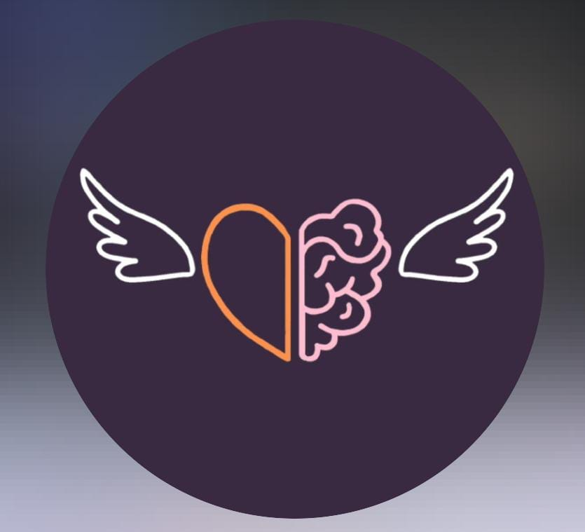

Nur Fadzilah
Staff Admin Offline
Telepon: 0896-2852-2859 - Email: nurfadzilah0201@gmail.com
Instagram : @nurfdzlh_
Instagram Nur Fadzilah
Tentang Saya
Saya merupakan anak pertama dari empat bersaudara. Saat ini saya bekerja sebagai staff admin offline di suatu perusahaan. Saya juga merupakan seorang mahasiswa tahun pertama di Universitas Siber Asia dengan jurusan Informatika.
Saya memiliki pengalaman bekerja sebagai staff admin offline selama 3 tahun. Saya seorang yang pekerja keras, teliti, dan dapat bekerja baik secara individu maupun tim. Saya ingin mengetahui dan mengerti lebih banyak ilmu di dunia informatika, maka dari itu saya mengambil jurusan Informatika di Universitas Siber Asia ini.
Pendidikan
| 2014 - 2017 | SMP Negeri 37 Kota Bekasi |
| 2017 - 2020 | SMA Negeri 10 Kota Bekasi - Jurusan Matematika dan IPA |
| Tahun 2025 | Universitas Siber Asia (Mahasiswa Tahun Pertama) - Jurusan Informatika |
Pengalaman Kerja
| 2022 - Sekarang | PT Raja Plafon Indonesia: Sebagai Staff Admin Offline |
| Deskripsi pekerjaan: |
|
Data Diri
| Nama Lengkap: | Nur Fadzilah |
| Tempat, Tanggal Lahir: | Bekasi, 08 November 2002 |
| Umur: | 22 Tahun |
| Alamat: | Kaliabang Rorotan, Kota Bekasi |
| Agama: | Islam |
| Status: | Belum Menikah |
PENGALAMAN ORGANISASI DAN KEGIATAN SOSIAL
- Menjadi Koordinator Lapangan di Ekstrakurikuler Marching Band Gita Flamboyan SMA Negeri 10 Kota Bekasi (2019-2020).
- Menjadi Wakil Ketua Pelaksana Diklat Ekstrakurikuler Marching Band Gita Flamboyan SMA Negeri 10 Kota Bekasi Tahun 2019.
- Menjadi Anggota Ekstrakurikuler Marching Band Gita Flamboyan SMA Negeri 10 Kota Bekasi (2017-2020).
- Menjadi Partisipan Volunteer Campaign Mental Health tentang Panick Attack dan Toxic Positivity di Rumah Sandar dan Affectionn Angel (2021).
Universitas Siber Asia
Klik di sini
Raja Plafon Indonesia
Klik di sini
Marching Band Gita Flamboyan

Klik di sini
Rumah Sandar
Klik di sini
Affectionn Angel
Klik di sini